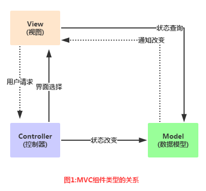
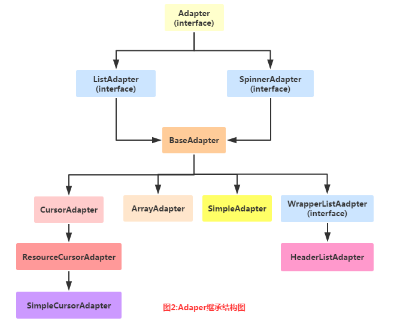
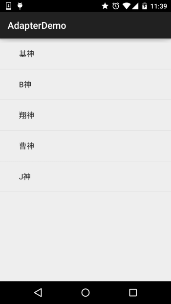
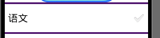
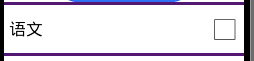
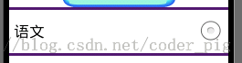
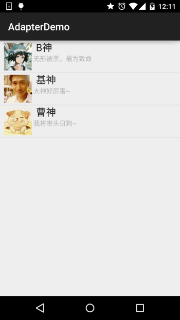
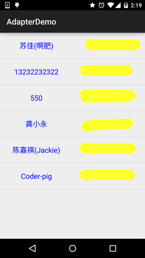

本節の導入
本節から説明するUIコントロールはすべてAdapter(アダプター)と関わりのあるものです。このAdapterを理解し、使いこなすことが非常に重要です。Adapterはデータを埋め込むのを助ける中間の橋渡し役であり、簡単に言うと、さまざまなデータを適切な形でviewに表示し、ユーザーに見せるためのものです！
1.MVCパターンの簡単な理解
Adapterを学び始める前に、このMVCパターンの概念について理解しておきましょう。例を挙げると、大規模な業務プログラムは通常、複数人で共同開発されます。例えば、操作インターフェースの企画と設計を担当する人、プログラムコードの作成を担当する人がいます。プログラムプロジェクトの分業を可能にするには、プログラムの構造上で適切な配置を行う必要があります。もし、インターフェースの設計と修正がプログラムコードの変更に関わるならば、両者の分業は実行上の困難を引き起こします。優れたプログラムアーキテクトは、プログラムプロジェクト全体を図のように3つの部分に分けます。

関係図の解析：
- Model：通常はデータと理解できます。プログラムの中核となる演算と判断ロジックを実行し、viewを通じてユーザーが入力したデータを取得し、データベースから関連情報を照会して、最後に演算と判断を行い、その結果をviewに渡して表示させます。
- view：ユーザーの操作インターフェースであり、要するにGUIです。どのインターフェースコンポーネントを使用すべきか、コンポーネント間の配置位置と順序を設計する必要があります。
- Controller：コントローラーであり、modelとviewの間のハブとして、プログラムの実行フローとオブジェクト間のやり取りを制御します。
そして、このAdapterは中間のControllerの部分に当たります：Model(データ) --->Controller(どのような方法で表示するか)--->View(ユーザーインターフェース) これがシンプルなMVCコンポーネントの簡単な理解です！
2.Adapter概念の解析
公式ドキュメント：Adapter
まず、その継承構造図を見てみましょう：

上記がAdapterと継承構造図です。次に、実際の開発でよく使われるいくつかのAdapterを紹介しましょう！
- BaseAdapter：抽象クラスです。実際の開発ではこのクラスを継承して関連メソッドをオーバーライドします。最もよく使われるAdapterです！
- ArrayAdapter
：ジェネリクス操作をサポートし、最もシンプルなAdapterで、1行のテキストしか表示できません〜 - SimpleAdapter：同じく優れた拡張性を持つAdapterで、さまざまな効果をカスタマイズできます！
- SimpleCursorAdapter：シンプルなテキストタイプのlistViewを表示するために使用されます。通常はデータベース関連で使われますが、やや時代遅れで、使用はお勧めできません！
実際、BaseAdapterだけで十分に使いこなせます。他のものは実際の開発ではあまり使わないので、後で使うときに解説します〜
3.コード例：
はい、言葉を重ねるより、コードを書くのが一番実際的です。次に、簡単なAdapterのインスタンスをいくつか書いて、Adapterがもたらす便利さを理解しましょう。また、AdapterはListViewやGridViewなどのコントロールと組み合わせて解説する必要があるため、少し高度な使い方はすべてListViewのところで説明します。ここでは簡単に効果をデモンストレーションするだけです。ここで使うコントロールはListViewで、次の節で解説します。今は分からなくても大丈夫です！
1）ArrayAdapter使用例：
実行結果図：

コード実装：
public class MainActivity extends AppCompatActivity {
@Override
protected void onCreate(Bundle savedInstanceState) {
super.onCreate(savedInstanceState);
setContentView(R.layout.activity_main);
//要显示的数据
String[] strs = {"基神","B神","翔神","曹神","J神"};
//创建ArrayAdapter
ArrayAdapter<String> adapter = new ArrayAdapter<String>
(this,android.R.layout.simple_expandable_list_item_1,strs);
//获取ListView对象，通过调用setAdapter方法为ListView设置Adapter设置适配器
ListView list_test = (ListView) findViewById(R.id.list_test);
list_test.setAdapter(adapter);
}
}
関連事項：
1.配列を使う以外にも、配列リソースファイルに書くこともできます：
例：res\valuseの下に配列リソースのxmlファイルを作成します：arrays.xml：
<?xml version="1.0" encoding="utf-8"?>
<resources>
<string-array name="myarray">
<item>语文</item>
<item>数学</item>
<item>英语</item>
</string-array>
</resources>次に、レイアウトのlistview属性でこのリスト項目を設定します：
<ListView
android:id="@id/list_test"
android:layout_height="match_parent"
android:layout_width="match_parent"
android:entries="@array/myarray"/>
これでOKです〜
もちろん、Javaコードで次のように書くこともできます：
ArrayAdapter<CharSequence> adapter = ArrayAdapter.createFromResource(this,
R.array.myarray,android.R.layout.simple_list_item_multiple_choice );
同じく可能です！
2.最初にArrayAdapterはジェネリクスをサポートすると言いましたので、コレクションが不可欠です。例えば、次のように書きます：
List<String> data = new ArrayList<String>();
data.add("基神");
data.add("B神")；
ArrayAdapter<String> adapter = new ArrayAdapter<String>
(this,android.R.layout.simple_expandable_list_item_1,data);
これでOKです〜
3.ArrayAdapterをインスタンス化する際の2番目のパラメータを見てきました：android.R.layout.simple_expandable_list_item_1実はこれらはシステムが提供してくれているListViewテンプレートで、以下の種類があります：
simple_list_item_1：1行だけのテキストボックス simple_list_item_2：2つのテキストボックスで構成 simple_list_item_checked：各項目はチェック済みのリスト項目で構成されています

simple_list_item_multiple_choice：すべてにチェックボックスが付いています
simple_list_item_single_choice：すべてにラジオボタンが付いています
2）SimpleAdapter使用例：
SimpleAdapter：一見シンプルなAdapterですが、機能は強力です。次に、少し複雑なリストレイアウトを書いてみましょう！
実行結果図：

コード実装：
まず、リスト項目の各アイテムのレイアウトを作成します：
list_item.xml
<?xml version="1.0" encoding="utf-8"?>
<LinearLayout xmlns:android="http://schemas.android.com/apk/res/android"
android:layout_width="match_parent"
android:layout_height="match_parent"
android:orientation="horizontal">
<!-- 定义一个用于显示头像的ImageView -->
<ImageView
android:id="@+id/imgtou"
android:layout_width="64dp"
android:layout_height="64dp"
android:baselineAlignBottom="true"
android:paddingLeft="8dp" />
<!-- 定义一个竖直方向的LinearLayout,把QQ呢称与说说的文本框设置出来 -->
<LinearLayout
android:layout_width="match_parent"
android:layout_height="wrap_content"
android:orientation="vertical">
<TextView
android:id="@+id/name"
android:layout_width="wrap_content"
android:layout_height="wrap_content"
android:paddingLeft="8dp"
android:textColor="#1D1D1C"
android:textSize="20sp" />
<TextView
android:id="@+id/says"
android:layout_width="wrap_content"
android:layout_height="wrap_content"
android:paddingLeft="8px"
android:textColor="#B4B4B9"
android:textSize="14sp" />
</LinearLayout>
</LinearLayout>
次はMainActivity.java:
public class MainActivity extends AppCompatActivity {
private String[] names = new String[]{"B神", "基神", "曹神"};
private String[] says = new String[]{"无形被黑，最为致命", "大神好厉害~", "我将带头日狗~"};
private int[] imgIds = new int[]{R.mipmap.head_icon1, R.mipmap.head_icon2, R.mipmap.head_icon3};
@Override
protected void onCreate(Bundle savedInstanceState) {
super.onCreate(savedInstanceState);
setContentView(R.layout.activity_main);
List<Map<String, Object>> listitem = new ArrayList<Map<String, Object>>();
for (int i = 0; i < names.length; i++) {
Map<String, Object> showitem = new HashMap<String, Object>();
showitem.put("touxiang", imgIds[i]);
showitem.put("name", names[i]);
showitem.put("says", says[i]);
listitem.add(showitem);
}
//创建一个simpleAdapter
SimpleAdapter myAdapter = new SimpleAdapter(getApplicationContext(), listitem, R.layout.list_item, new String[]{"touxiang", "name", "says"}, new int[]{R.id.imgtou, R.id.name, R.id.says});
ListView listView = (ListView) findViewById(R.id.list_test);
listView.setAdapter(myAdapter);
}
}
はい、以上がSimpleAdapterの簡単な使い方です。なかなか面白いですね〜
3）SimpleCursorAdapter使用例：
これは時代遅れですが、SQLiteにあまり詳しくない初心者にとっては、なかなか便利に使えます！前にContentProivderを学んだときに書いた連絡先を読み取る例を覚えていますか？以前はLogを出力して表示していましたが、今回はこのSimpleCursorAdapterを使ってListViewに表示してみましょう！
実装結果図：

コード実装：
まず、listViewの各itemのレイアウトを書きます：
list_item.xml:
<?xml version="1.0" encoding="utf-8"?>
<LinearLayout xmlns:android="http://schemas.android.com/apk/res/android"
android:layout_width="match_parent"
android:layout_height="match_parent"
android:orientation="horizontal">
<TextView
android:id="@+id/list_name"
android:layout_width="0dp"
android:layout_height="64dp"
android:layout_weight="1"
android:gravity="center"
android:text="小猪"
android:textColor="#0000FF"
android:textSize="18sp" />
<TextView
android:id="@+id/list_phone"
android:layout_width="0dp"
android:layout_height="64dp"
android:layout_weight="1"
android:gravity="center"
android:text="13798989898"
android:textColor="#EA5C4D"
android:textSize="18sp" />
</LinearLayout>
次に、activity_mainレイアウトは前と同じで、シンプルなListViewです。そして
MainActivity.java:
public class MainActivity extends AppCompatActivity {
@Override
protected void onCreate(Bundle savedInstanceState) {
super.onCreate(savedInstanceState);
setContentView(R.layout.activity_main);
ListView list_test = (ListView) findViewById(R.id.list_test);
//读取联系人
Cursor cursor = getContentResolver()
.query(ContactsContract.CommonDataKinds.Phone.CONTENT_URI, null, null, null, null);
SimpleCursorAdapter spcAdapter = new SimpleCursorAdapter(this,R.layout.list_item,cursor,
new String[]{ContactsContract.CommonDataKinds.Phone.DISPLAY_NAME,ContactsContract.CommonDataKinds.Phone.NUMBER},
new int[]{R.id.list_name,R.id.list_phone});
list_test.setAdapter(spcAdapter);
}
}
最後にAndroidManifest.xmlに連絡先を読み取る権限を追加すればOKです！
<uses-permission android:name="android.permission.READ_CONTACTS"/>
一問一答：
问：こんなに簡単なの？
——答え：はい、Cursorを直接取得してバインドするだけです。自分でSQL文を書く必要はありません！
问：これは時代遅れだと言いましたが、何で代用するのですか？
——答え：一般的な方法は、自分でBaseAdapterをオーバーライドし、データ集合を取得した後に対応するコントロールとバインドすることです！
问：このSimpleCursorAdapterで注意すべき点はまだありますか？
——答え：あります。SimpleCursorAdapterを使用する場合、バインドするデータベーステーブルには必ずidというフィールド、またはasid;また、バインド時に取り出すデータにはこのid項目が含まれている必要があります。そうでなければ、以下のエラーが発生します！java.lang.IllegalArgumentException: column 'id' does not exist**
本節のまとめ：
はい、Adapterの基礎解説はここまでです。もちろん、ここで解説した3つのAdapterは、実際の開発では...基本的に使いません。ハハ、SimpleAdapterをたまに使うことはありますが、基本的にはBaseAdapterをオーバーライドします！
また、BaseAdapterについては、解説すべきことがたくさんあるので、ListViewのところでまとめて説明します。何しろAdapterは常にViewと関わりがあり、ListViewは私たちが最もよく使うコントロールです〜。では、本節はここまでです。ありがとうございました〜
クリックしてノートを共有
ノートは本記事の内容を拡張したものである必要があります！
記事投稿は、こちらをクリック
登録招待コードの取得方法
ノートを共有する前にログインが必要です！
登録招待コードの取得方法